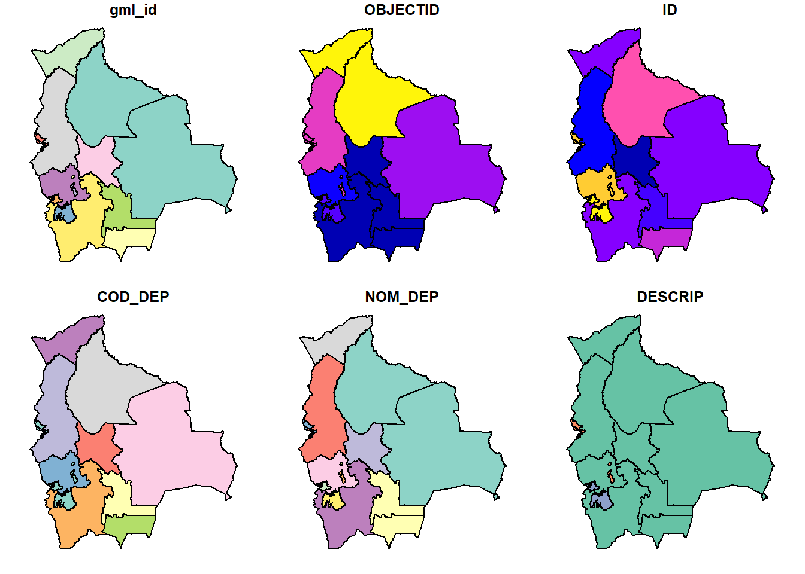

3 Visualizando datos en formato vector y raster en R
3.1 Visualización de datos espaciales en R: Vector vs. Raster (Paquete sf, raster, plot).
En R existe una variedad de paquetes que te puedn ayudar a vizualizar y tabajar con datos espaciales, en el presente capítulo analizaremos los paquetes sf para manejo de datos espaciales y raster para manejos raster, y su vizualización básica con la función plot.
3.1.1 Instalacion de paquetes
Los paquetes sf y raster se encuentra en el repositorio oficial de R: el paquete sf que se utiliza para manejar simples features, una forma estandarizada para utilizar datos/objetos del tipo vector, utiliza los estandares GDAL para lectura y escritura de datos, GEOS geométricas y PROJ para proyecciones y transformación de datos; el paquete raster permite la lectura, esccritura admás de poder realizar análisi y modelados en datos cuadriculaos (imágenes raster).
Para instalación de paquete oficiales o que se encuentren dentro del repositorio oficial se utiliza la función install.packages().
3.1.2 Abrir archivos vectoriales y su visualización
Los archivos vectoriales uno de los mas utilizados son los archivos en formato .shp, que son archivos de ESRI, los modelos vectoriales almacenan 3 tipos de fromas geemétricas que son: punto, linea y poligono. En R existen diversas formas de abrir este tipo archivos, se puede utilizar otros paquetes como ser rgdal o sp.
En el paquete sf la funcion st_read() permite la lectura de este tipos de archivos solo hay que colocar la ruta de nuestro archivo.
#listamos los archivos con extension .shp
shape_files <- list.files('../recursos/shps', full.names = T, pattern = '.shp$')
shape_files## [1] "../recursos/shps/aeropuertos_bolivia.shp"
## [2] "../recursos/shps/Departamentos_Bolivia.shp"
## [3] "../recursos/shps/DUCTOS.shp"
## [4] "../recursos/shps/POBLACIONES.shp"#abrimos el primer elemento que son los departamentos de Bolivia
sf_dep <- st_read(shape_files[2], stringsAsFactors = F)## Reading layer `Departamentos_Bolivia' from data source `D:\VC2019\TRABAJO\UMSA\geografia\curso\curso_r_espacial\recursos\shps\Departamentos_Bolivia.shp' using driver `ESRI Shapefile'
## Simple feature collection with 14 features and 6 fields
## geometry type: MULTIPOLYGON
## dimension: XY
## bbox: xmin: -69.64483 ymin: -22.90657 xmax: -57.45443 ymax: -9.669633
## epsg (SRID): 4326
## proj4string: +proj=longlat +datum=WGS84 +no_defsSe carga un objeto que contiene información geográfica como ser: el tipo de vector, la extension geográfica y en que proyeccion esta. Además se carga todos los datos adjuntos y se crea una columna llamadad geometry donde esta cargado la geometria que es donde esta ubicada espacialmente.
Para visualizar utilizaremos la función plot que es la que esta por defecto en el R.

Richard A. Becker, Jhon M. Chambers. n.d. S an Interactive Environment for Data Analysis and Graphics. 1984th ed. Murray Hill, New York: WadsWroth.